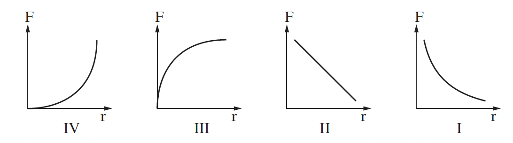

שאלה 1
נתונים שני כדורים מוליכים קטנים, A ו-B. הרדיוס של כדור A כפול מהרדיוס של כדור B.
המרחק בין הכדורים גדול מאוד ביחס לרדיוסים שלהם.
המטען של כדור A הוא +6 · 10-8 C.
חיברו את הכדורים זה לזה בעזרת תיל מוליך דק. לאחר החיבור בין הכדורים השתנה המטען של כדור A, וכעת הוא +4 · 10-8 C.
הניחו שכל החלקיקים שעוברים בתיל הם אלקטרונים בלבד.
חשבו את מספר האלקטרונים שעברו בין הכדורים. (8 נקודות)
האם האלקטרונים עברו מכדור A לכדור B, או מכדור B לכדור A? נמקו.
(7 נקודות)
מהו מטענו של כדור B לאחר החיבור בין הכדורים? הסבירו. (8 נקודות)
האם לפני החיבור בין הכדורים היה כדור B טעון? אם לא - נמקו, אם כן - חשבו את מטענו.
(5 נקודות)
מנתקים את הכדורים זה מזה ומניחים אותם על משטח אופקי וחלק, העשוי חומר מבודד.
משגרים את כדור A אל עבר כדור B הקבוע במקומו.
לפניכם ארבעה גרפים.

קבעו איזה מבין הגרפים I-IV מתאר נכונה את גודל הכוח החשמלי, F, הפועל על כדור A כפונקציה של המרחק r בין הכדורים. נמקו את קביעתכם.
(5 1/3 נקודות)